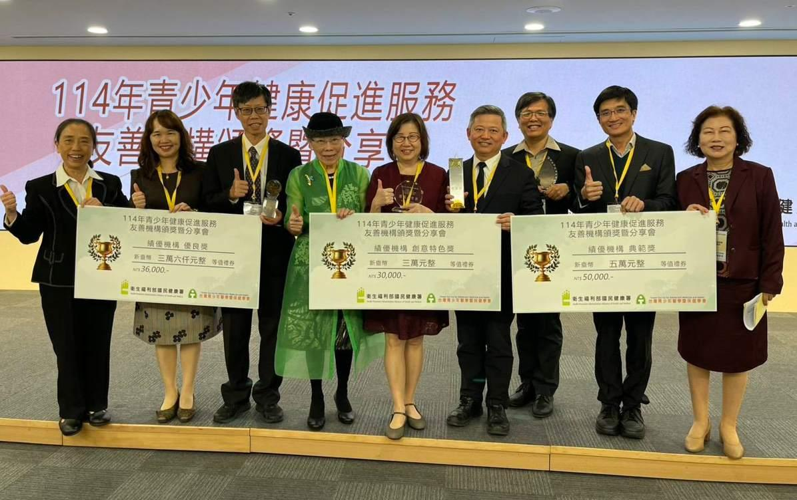

02
榮耀與肯定
Honors & Recognition
被看見的努力 是繼續前行的動力
Honors & Recognition · 2023 – 2026
民國 113 年母嬰親善 雙料獲獎

民國 114 年青少年健康促進 雙料獲獎
①
母嬰親善連續雙料
民國 113 + 114 年連續獲衛福部「特優獎 + 創意特色獎」
②
青少年健康促進
從民國 112 年認證到民國 114 年衛福部「典範獎 + 創意特色獎」
③
SNQ 國家品質標章群
小兒科・藥劑科・護理科・婦產科多項持續認證
④
新生兒與病安品質
新生兒中重度病房「降低退件率」優秀團隊獎
Awards are not the destination — they are the public's confirmation of how we choose to work every day.
31